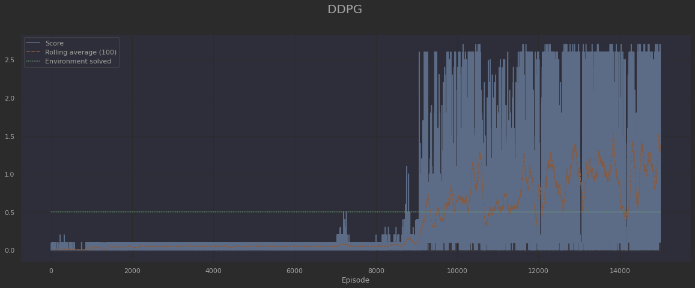
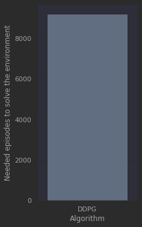

Deep Reinforcement Learning Nanodegree
This repository contains my Deep Reinforcement Learning solution to one of the stated problems within the scope of the following Nanodegree:
Deep Reinforcement Learning Nanodegree Program - Become a Deep Reinforcement Learning ExpertDeep Reinforcement Learning is a thriving field in AI with lots of practical applications. It consists of the use of Deep Learning techniques to be able to solve a given task by taking actions in an environment, in order to achieve a certain goal. This is not only useful to train an AI agent so as to play videogames, but also to set up and solve any environment related to any domain. In particular, as a Civil Engineer, my main area of interest is the AEC field (Architecture, Engineering & Construction).
Collaboration and Competition Project
This project consists of a Collaboration and Competition problem, which is contained within the Policy Based Methods chapter and is solved by means of a Multi-Agent Deep Deterministic Policy Gradient algorithm (MA-DDPG).
Environment description
The environment used for this project is based on the Unity ML-Agents Tennis environment from 2018. There is no clear equivalent in 2022, but the closest would be the Soccer Environment.
It consists of a tennis playground, in which there is a racket-shaped agent at each side of the net. The agents can move around in order to be able to bounce the ball over the net to the other side of the playground. The goal for the agents is to keep the ball in play for as many time steps as possible.

Its characteristics are as follows:
- The state space consists of 8 variables corresponding to the position and velocity of the ball and racket.
- The action space consists of 2 continuous actions, corresponding to movement perpendicular to the net, and jumping.
- An agent receives a reward of +0.1 when it is able to hit the ball over the net. On the contrary, if it lets the ball touch the ground or hit it out of bounds, it receives a reward of -0.01.
- The environment is considered solved when the average score over 100 episodes is at least 0.5. In turn, the score of each episode corresponds to the maximum between the two agents.
Solution
The solution to the Tennis environment provided within this repository is described as follows.Algorithm overview
As introduced above, the environment is solved by means of a Multi Agent Deep Deterministic Policy Gradient algorithm, or MA-DDPG. The vanilla DDPG algorithm, as firstly introduced by the DeepMind team in 2015, accomplished to transfer the ideas underlying the success of Deep Q-Learning to the continuous action domain. On top of that, the multi-agent version was introduced by OpenAI in 2017 and extended the concept to a multi-agent scenario. In particular, the memory replay is shared among all the agents in order to benefit from the aggregate experiences.
Some minor tweaks from the original DDPG paper taken here into account have been the consideration of a typical gaussian noise for action selection, instead of the originally proposed Ornstein–Uhlenbeck process, as well as a traditional Kaiming He initialization for the middle layer weights of the neural networks.
Repository description
The code is structured with the PyTorch Deep Neural Networks on model.py, the agent logics on agent.py and the environment setup on environment.py. All of it is structured pythonically, in an OOP fashion, and is often self-explanatory. Lastly, the Jupyter Notebook Tennis.ipynb builds up an interface to train agents according to the multi-agent version of the Deep Deterministic Policy Gradient algorithm, as well as to visualize the corresponding results with pandas DataFrames and Seaborn plots.
Description of the solution
This was undoubtedly a challenging environment. A huge amount of testing was done without the agents being able to learn. Finally, the strategy which got the best results was to set up sensible hyperparameters and just run a very long training. Below, it is shown the training evolution for 15000 episodes:
As it can be seen, there is an incredibly long first stage, up to the surroundings of 8000 episodes, in which the agents barely learn something at all. Then suddenly, the actual learning begins to happen and the environment is quickly resolved, achieving more than 0.5 points on the average of the last hundred episodes ( which first occurs at the end of episode nº 9222). From that moment onwards, there are intervals in which the agents get momentarily worse, and there are peaks in which the performance even reaches 1.5 points. All in all, the learning is not extremely stable, but the shared Memory Replay Buffer always helps the agents return to the correct learning path, and the overall evolution is uptrend.
Episodes needed to solve the environment
The following chart shows the number of episodes which was needed to solve the environment:
As it can be seen, the environment is solved within 9222 episodes.
Ideas for a next step
For sure, some things can be done in order to converge before. In order to improve future performance, the following elements could be explored:
- Hyperparameter tweaking (learning rates, batch size, amount of noise, delays, etc.). Although it is noted that a lot of tweaking has already been done, but this is a challenging environment.
- Experiment with different architectures for the neural networks. As in the previous case, some tweaking has already been done, but it always can happen that the ideal combination was not among the tried ones.
- Perform a training run with some performant version of Prioritized Experience Replay, such as Hindsight Experience Replay (HER). Vanilla Prioritized Experience Replay is already implemented in the current code, but for some reason, experimenting with it did not yield great results. In turn, HER should be able to better enhance performance in an challenging environment with sparse rewards such as this one.